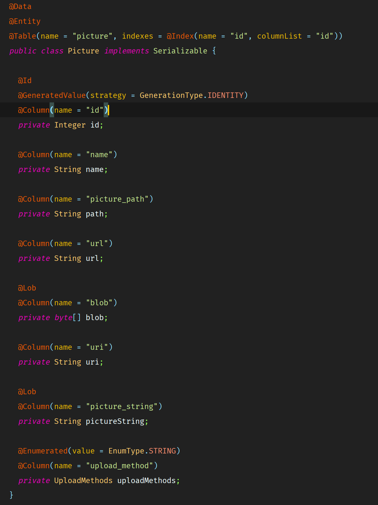

Because the V1 was having some implementation issues, I decided to create a new version of the old one. This version has Dependency Injection, an organized structure, 3 ways to upload the picture, and a view for testing purposes.
This project was made with Java 8, HTML5, CSS3, Bootstrap 4, Spring Boot 2, Spring Framework 5, H2-database, JPA/Hibernate, Thymeleaf, and Azure.
The purpose of this publication is not to explain detailed how this works. It is just to give you a brief introduction to this project. In order to see it working, you will have to download it from GitHub and run it on your own computer.
SPOILER: this is going to be really fun.
Let’s get started…
In this IndexController we have the root of the web app. This method only displays all the pictures registered in the database. Very simple stuff.
Here we have the PictureController. This controller handles every request from the client such as saving a picture, updating a picture, deleting a picture, and retrieving a picture by its id.

This is our model that holds data of the picture. We are going to use Project Lombok to get things done faster. Make sure you install Project Lombok on your IDE. With the @Data annotation, Project Lombok automatically generates an empty constructor, a constructor with every field, getters and setters, equals and hashcode, and toString(). I think I am missing something üòù
The magic starts here. I have created a factory with the implementations of PictureService. In the frontend, you get to choose where you want to store your picture.

Your choices are to the Server, to a Cloud Storage like Azure (Blob storage used in this example), and to the Database.
This is how the image is saved to the server. Basically a new file is created with the bytes of the multipart file.
s image below is how the multipart file gets uploaded to the storage.
In this case, I am using the Azure credentials from a .properties file specified by @ProperySource(“classpath:azure.properties.”)
The @Value annotation takes the content in the field specified inside the annotation. We see that @Value(“${azure.storageConnectionString}”) matches the one in the azure.properties file.
I know this is not all, but this project has too much information to be cover in just one post. I invite you all to check the GitHub repo.
Feel free to fork and contribute to this project.